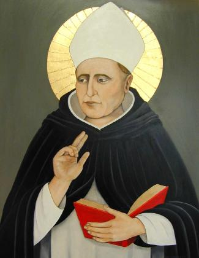
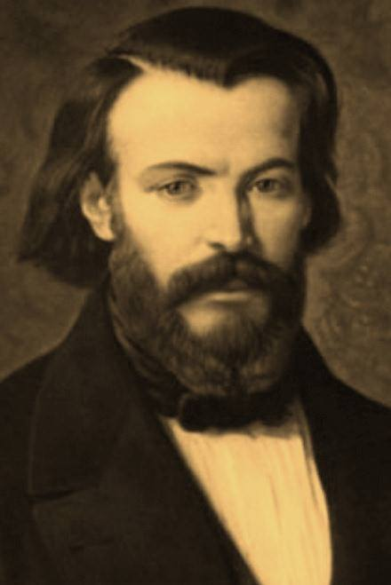

Bienvenue à toi, ami normalien, sur le site des Talas !
Que tu aies atterri ici par erreur (tu jurerais pourtant avoir
cliqué sur le club K-fêt), par hasard (ici on parle plutôt de
Providence), ou tout simplement de ton plein gré (après tout
pourquoi se fendre les cheveux en quatre?), tu pourras tout
apprendre sur l'aumônerie, ce lieu de rencontre, de partage et
de prière, joyeux et fraternel.
Tu découvriras que, loin d'être en marge, l'aumônerie tala
participe pleinement à la vie de l'école en essayant de toujours
mieux remplir une double mission : permettre aux élèves de vivre
avec simplicité leur foi au sein de la structure où ils vivent ;
faire connaître le Christ.
Elle n’est pas réservée exclusivement aux pratiquants réguliers,
mais est ouverte à tous ceux qui désirent, ponctuellement ou sur
le long terme partager un temps de prière, d’enseignement ou de
dialogue...
N'hésite pas à nous rejoindre ou à nous contacter pour plus d'informations !
Sur ce, bonne navigation, et à bientôt !
Les quatre patrons de l'aumônerie



De gauche à droite :
- Saint Albert le Grand, saint patron des scientifiques
- Saint Thomas d'Aquin, saint patron des littéraires
- Bienheureux Frédéric Ozanam
- Le père Florent URFELS, Notre aumônier